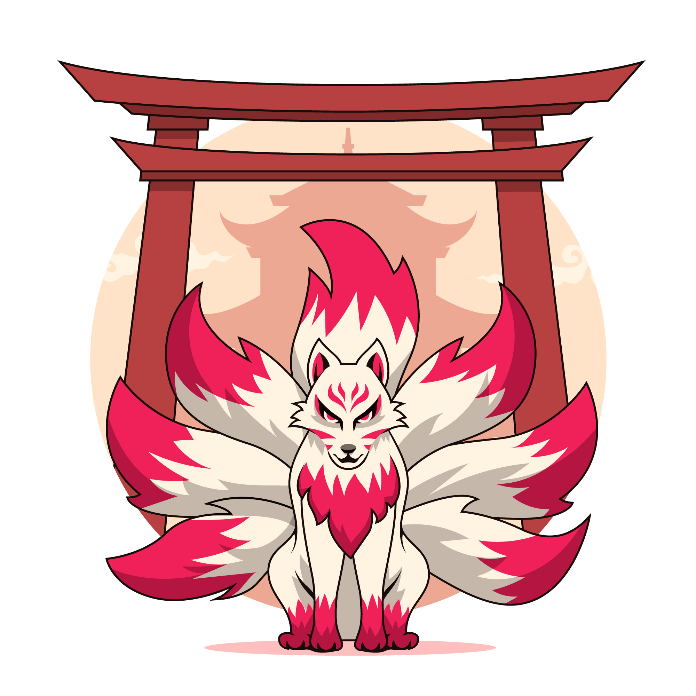

Développeur Web
Vallaud Ulrich
51100 Reims
07 77 78 70 24
ulrichvallaud.dev@gmail.com
Mon linkedin
Mon portfolio
Mai 2022 - Octobre 2022
Développeur Web Full-Stack Javascript chez O'clock
Février 2018 - Août 2018
Développeur intégrateur en en réalisation d'applications web
2010
BTS MAI au lycée St Jean Baptiste de la salle
2008
BAC PRO MEI au lycée St Jean Baptiste de la salle
2006
BEP MSMA au lycée St Jean Baptiste de la salle
2022 : Projet de formation
O'Clock
Leader Back-end pour le projet Note-to-myself
lien github du projet
janvier 2019 - Mars 2019
A-GNET
Technicien de surface de batiments médicalisé
Mai 2008 - Novembre 2016
Quick
D'équipier à manager de restaurant
Aout 2006 - Mai 2008
Color Bowl 51
Technicien de maintenance pour les 32 pistes de bowling

 Mon linkedin
Mon linkedin Mon portfolioMon portfolio
Mon portfolioMon portfolio